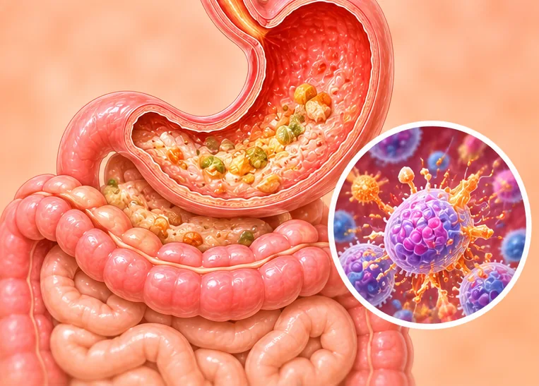
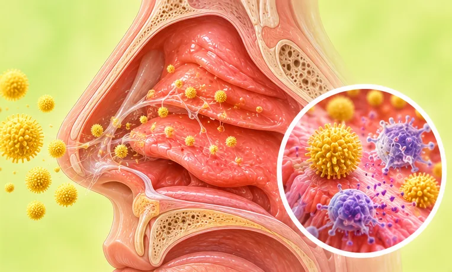

AI
AI Body Master
智能舒缓调理
EN
中文
BM
健康指南
›
过敏
过敏
27 种疾病与症状
丘疹性荨麻疹

严重过敏反应
人工性荨麻疹
寒冷性荨麻疹
急性荨麻疹
慢性荨麻疹
接触性皮炎
敏感性皮肤
海鲜过敏
皮肤过敏红肿
胆碱能性荨麻疹
荨麻疹
血清病
血管性水肿
过敏性休克
过敏性咳嗽
过敏性咽炎
过敏性哮喘
过敏性皮疹
过敏性皮肤病
过敏性紫癜
过敏性紫癜肾炎
过敏性结膜炎
过敏性肺炎

过敏性鼻炎
青霉素过敏
面部过敏
在 AI Body Master 应用中打开
身体地图、5 步身体评估和你的舒缓方案